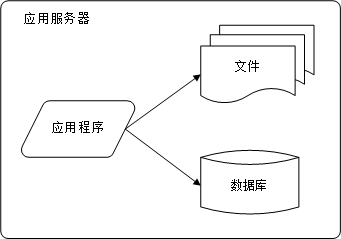
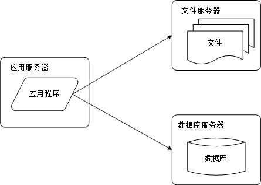
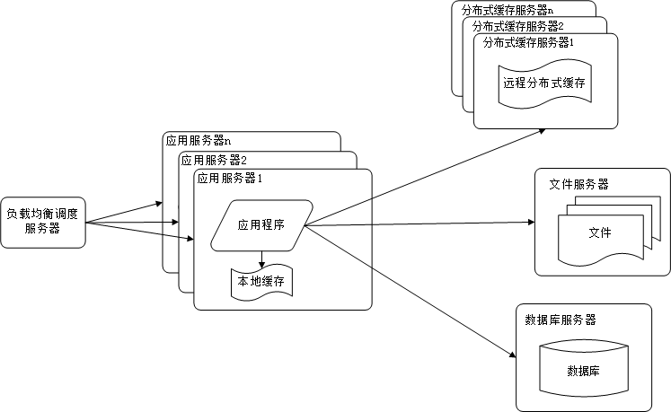
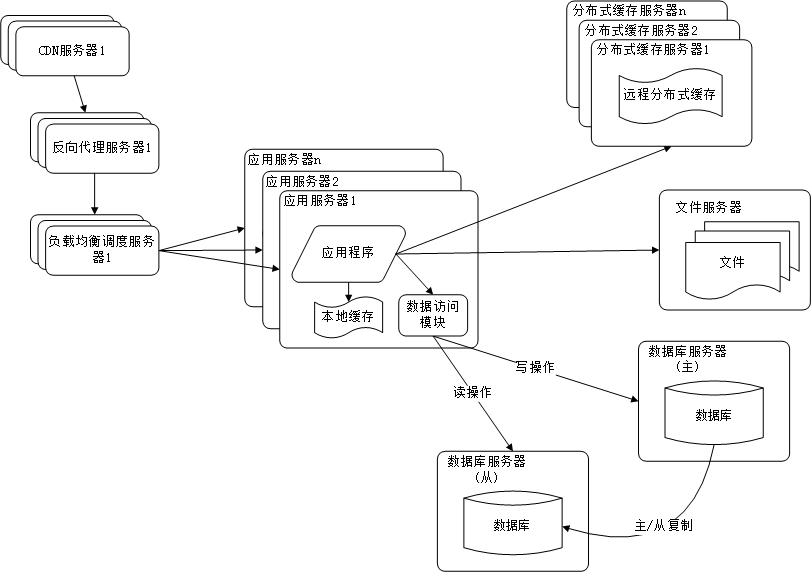
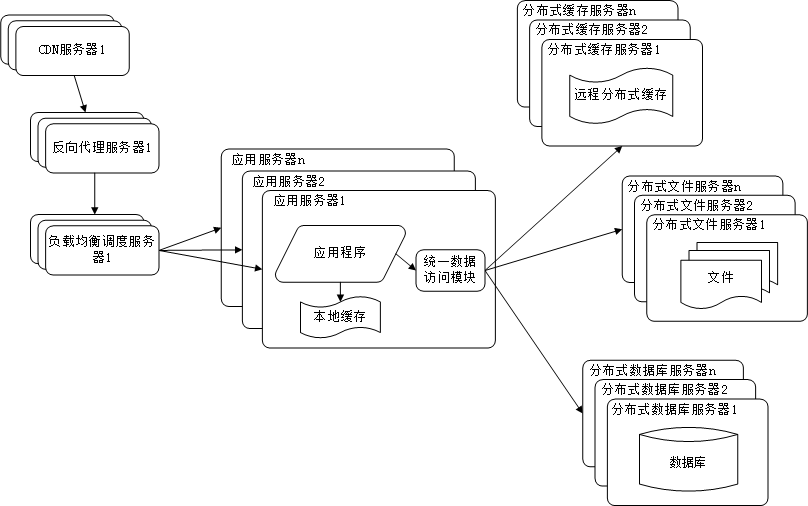
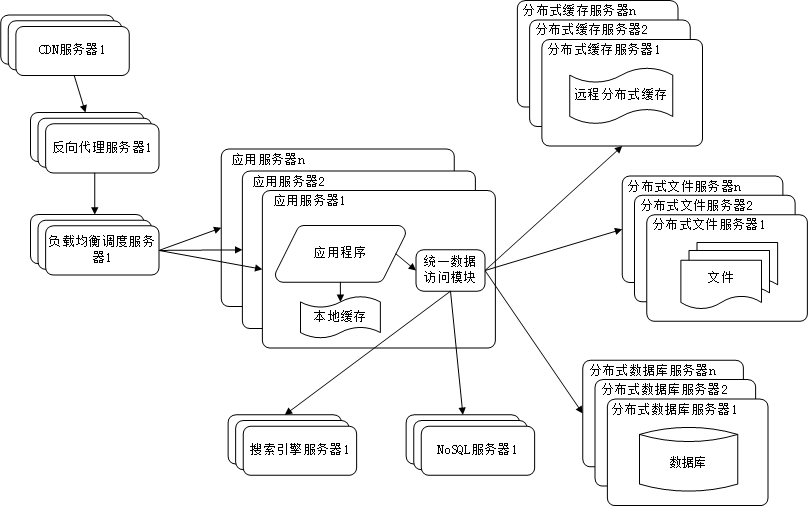
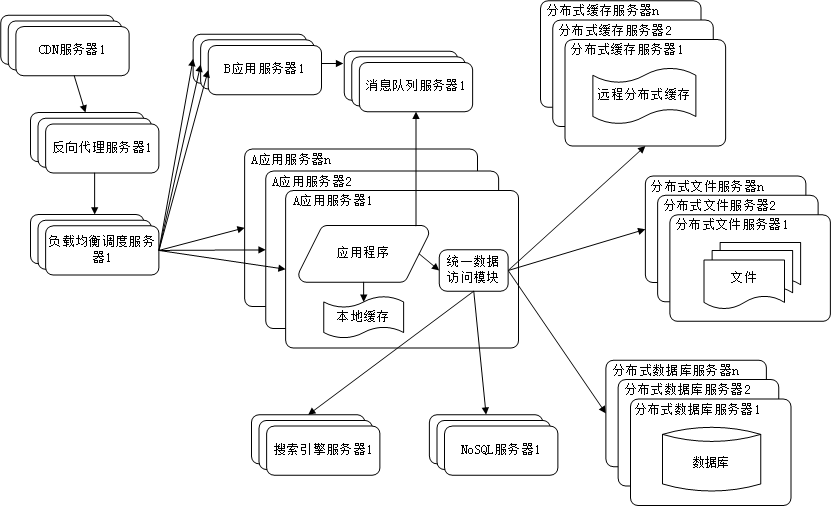
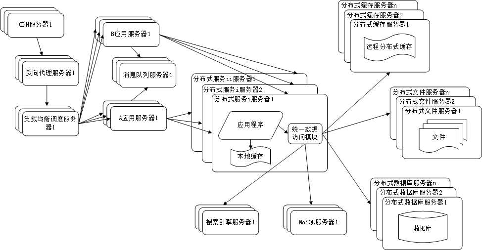

《大型网站技术架构》读书笔记：
当我们架设一个系统的时候通常需要考虑到如何与其他系统交互，所以我们首先需要知道各种系统之间是如何交互的，使用何种技术实现。
现在我们常见的不同系统不同语言之间的交互使用WebService，Http请求。WebService，即“Web 服务”，简写为 WS。从字面上理解，它其实就是“基于 Web 的服务”。而服务却是双方的，有服务需求方，就有服务提供方。服务提供方对外发布服务，服务需求方调用服务提供方所发布的服务。如果说得再专业一点，WS 其实就是建立在 HTTP 协议上实现异构系统通讯的工具。没错！WS 说白了还是基于 HTTP 协议的，也就是说，数据是通过 HTTP 进行传输的。最早我们是用CXF开发SOAP服务实现WS，后面我们是用REST服务实现WS(这个目前使用比较多，也最我用得最多的这一种)。基于CXF也可以开发REST服务，不过我们一般直接使用springMVC或者其他MVC框架实现REST服务。
但是在很多人的印象中Web service的话一般指十来年前IBM主导的基于XML的各种交互技术，现在除了一些公司在用之外用得人也很少了。广义的话Webservice就是Web 服务了，一切皆服务。
常见的不同系统相同语言之间的交互用RPC(远程过程调用)，或者RMI(远程方法调用)实现，不用对外部提供服务，当然上面说的也可以使用在相同语言之间的交互,只是我常用的是RPC。
与传统企业应用系统相比，大型互联网应用系统有以下特点。 高并发，大流量 高可用 海量数据 用户分布广泛，网络情况复杂 安全环境恶劣 需求快速变更，发布频繁 渐进式发展
大型网站的技术挑战主要来自于庞大的用户，高并发的访问和海量的数据，任何简单的业务一旦需要处理数以P计的数据和面对数以亿计的用户，问题就会变得很棘手。大型网站架构主要就是解决这类问题

初始阶段 的小型系统 应用程序、数据库、文件等所有的资源都在一台服务器上通俗称为LAMP
特征：应用程序、数据库、文件等所有的资源都在一台服务器上。
描述：通常服务器操作系统使用linux，应用程序使用PHP开发，然后部署在Apache上，数据库使用Mysql，汇集各种免费开源软件以及一台廉价服务器就可以开始系统的发展之路了。

好景不长，发现随着系统访问量的再度增加，webserver机器的压力在高峰期会上升到比较高，这个时候开始考虑增加一台webserver
特征：应用程序、数据库、文件分别部署在独立的资源上。
描述：数据量增加，单台服务器性能及存储空间不足，需要将应用和数据分离，并发处理能力和数据存储空间得到了很大改善。
特征：数据库中访问较集中的一小部分数据存储在缓存服务器中，减少数据库的访问次数，降低数据库的访问压力。
描述：系统访问特点遵循二八定律，即80%的业务访问集中在20%的数据上。缓存分为本地缓存和远程分布式缓存，本地缓存访问速度更快但缓存数据量有限，同时存在与应用程序争用内存的情况。

在做完分库分表这些工作后，数据库上的压力已经降到比较低了，又开始过着每天看着访问量暴增的幸福生活了，突然有一天，发现系统的访问又开始有变慢的趋势了，这个时候首先查看数据库，压力一切正常，之后查看webserver，发现apache阻塞了很多的请求，而应用服务器对每个请求也是比较快的，看来 是请求数太高导致需要排队等待，响应速度变慢
特征：多台服务器通过负载均衡同时向外部提供服务，解决单台服务器处理能力和存储空间上限的问题。
描述：使用集群是系统解决高并发、海量数据问题的常用手段。通过向集群中追加资源，提升系统的并发处理能力，使得服务器的负载压力不再成为整个系统的瓶颈。

享受了一段时间的系统访问量高速增长的幸福后，发现系统又开始变慢了，这次又是什么状况呢，经过查找，发现数据库写入、更新的这些操作的部分数据库连接的资源竞争非常激烈，导致了系统变慢
特征：多台服务器通过负载均衡同时向外部提供服务，解决单台服务器处理能力和存储空间上限的问题。
描述：使用集群是系统解决高并发、海量数据问题的常用手段。通过向集群中追加资源，使得服务器的负载压力不在成为整个系统的瓶颈。

特征：采用CDN和反向代理加快系统的 访问速度。
描述：为了应付复杂的网络环境和不同地区用户的访问，通过CDN和反向代理加快用户访问的速度，同时减轻后端服务器的负载压力。CDN与反向代理的基本原理都是缓存。

随着系统的不断运行，数据量开始大幅度增长，这个时候发现分库后查询仍然会有些慢，于是按照分库的思想开始做分表的工作
特征：数据库采用分布式数据库，文件系统采用分布式文件系统。
描述：任何强大的单一服务器都满足不了大型系统持续增长的业务需求，数据库读写分离随着业务的发展最终也将无法满足需求，需要使用分布式数据库及分布式文件系统来支撑。分布式数据库是系统数据库拆分的最后方法，只有在单表数据规模非常庞大的时候才使用，更常用的数据库拆分手段是业务分库，将不同的业务数据库部署在不同的物理服务器上。

特征：系统引入NoSQL数据库及搜索引擎。
描述：随着业务越来越复杂，对数据存储和检索的需求也越来越复杂，系统需要采用一些非关系型数据库如NoSQL和分数据库查询技术如搜索引擎。应用服务器通过统一数据访问模块访问各种数据，减轻应用程序管理诸多数据源的麻烦。

特征：系统上按照业务进行拆分改造，应用服务器按照业务区分进行分别部署。
描述：为了应对日益复杂的业务场景，通常使用分而治之的手段将整个系统业务分成不同的产品线，应用之间通过超链接建立关系，也可以通过消息队列进行数据分发，当然更多的还是通过访问同一个数据存储系统来构成一个关联的完整系统。纵向拆分：将一个大应用拆分为多个小应用，如果新业务较为独立，那么就直接将其设计部署为一个独立的Web应用系统纵向拆分相对较为简单，通过梳理业务，将较少相关的业务剥离即可。横向拆分：将复用的业务拆分出来，独立部署为分布式服务，新增业务只需要调用这些分布式服务横向拆分需要识别可复用的业务，设计服务接口，规范服务依赖关系。

参考知识库 大型网站架构知识库